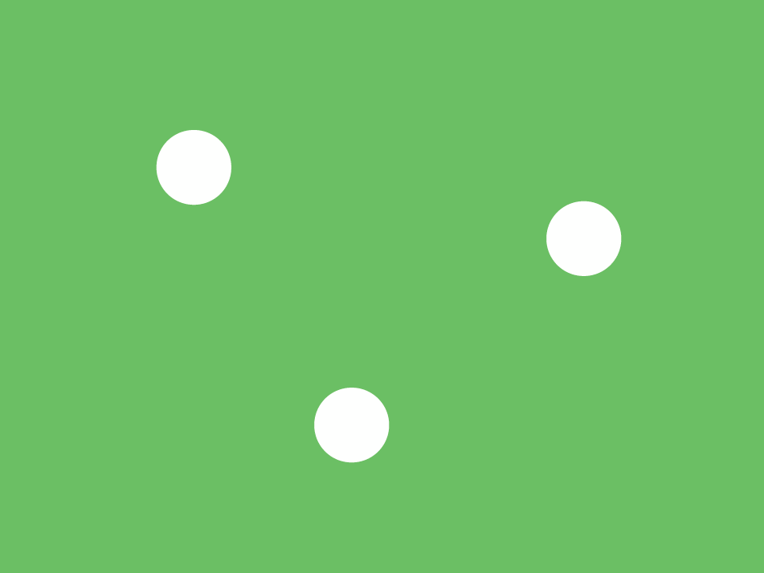
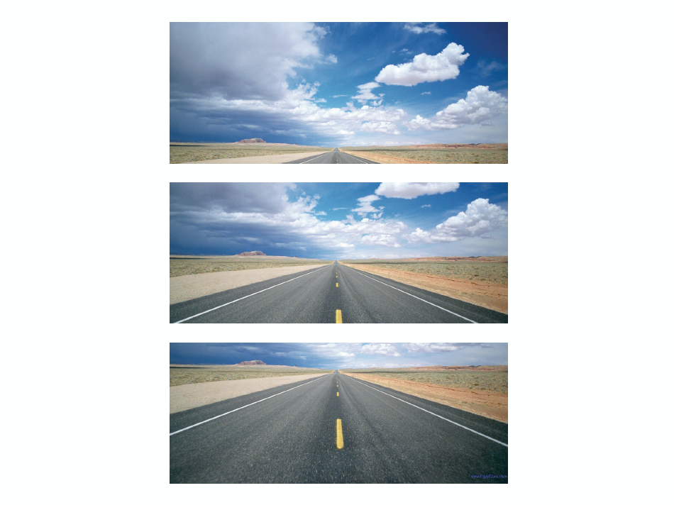

Lesson 4
Grid + Typography Introduction
I'll post notes after class. Here are the slides.
Bauhaus Design Overview
The Bauhaus movement started the trend for minimalistic and simplistic designs that focused mainly on basic geometry. They sought to unify art with technology making way for designers today.
Principle of Unequal Spacing
Distribute spacing as unevenly as possible so that the composition does not feel awkward or rigid. In short, this is why designers tend to move things one pixel to the left or right for ages!
Rule of Odds
Even numbers create symmetry and balance while odd numbers create visual interest and force movement. With an odd number of elements, the eye can’t pair things into groups as easily. In the photo below, there are 5 LEGO minifigures. It's hard to group these figures into smaller sets of objects.

In this image, however, the eye will automatically group the two LEGO minifigures into a pair.

Rule of Thirds
Placing the main subject of a piece so that it fills 2/3 or 1/3 of the space is more visually appealing.

Golden Ratio
The golden ratio is a mathematical theory that helps your designs be more pleasing to the eye. It's based on the Fibonnaci Sequence. Read more about it here.

Horizon Line
The horizon line helps define where the focus of a design is. Depending on where you put it, the eye will be drawn to a different area of a page.
The Grid
The grid is a series of lines
Activity: Redesign an Airplane Ticket

Redesign an airline ticket only using one typeface family and a grid layout of your choice.